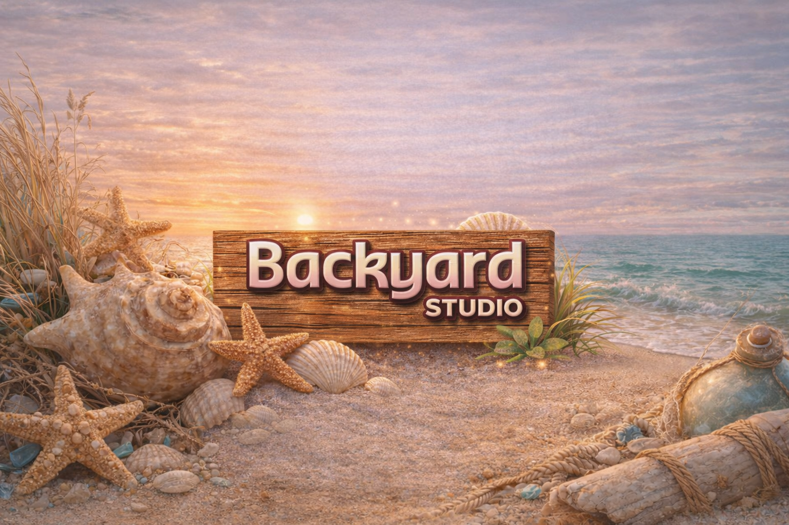

Keepsake Project
Custom story-led keepsakes for milestones, family memory, remembrance, and meaningful gifting.

For stories, seasons, and ideas that need thoughtful shape.
Use this page to begin clearly and gently. Share what you need, choose your preferred way to connect, and Backyard Studio will help shape the right keepsake, reflection tool, or story-led creative direction for your season.
Custom story-led keepsakes for milestones, family memory, remembrance, and meaningful gifting.
Guided journals, printable reflection pages, and gentle resources for healing and renewal seasons.
Story-led visual support for personal brands and small businesses that need clarity and cohesion.
Need examples before you enquire? You can review selected portfolio work or explore services in more detail first.